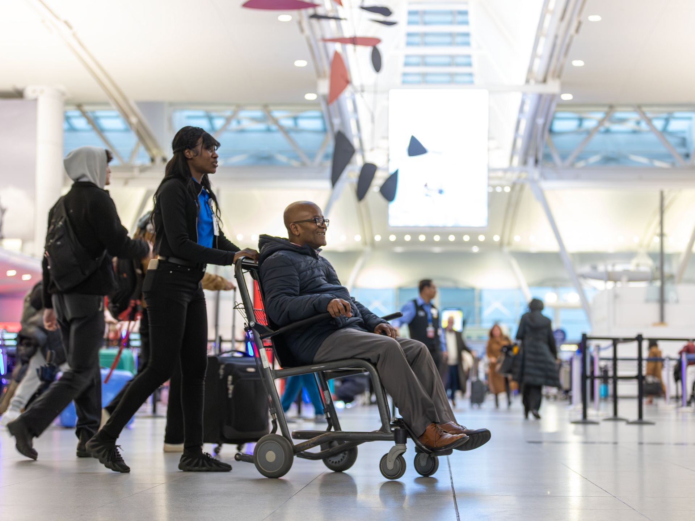
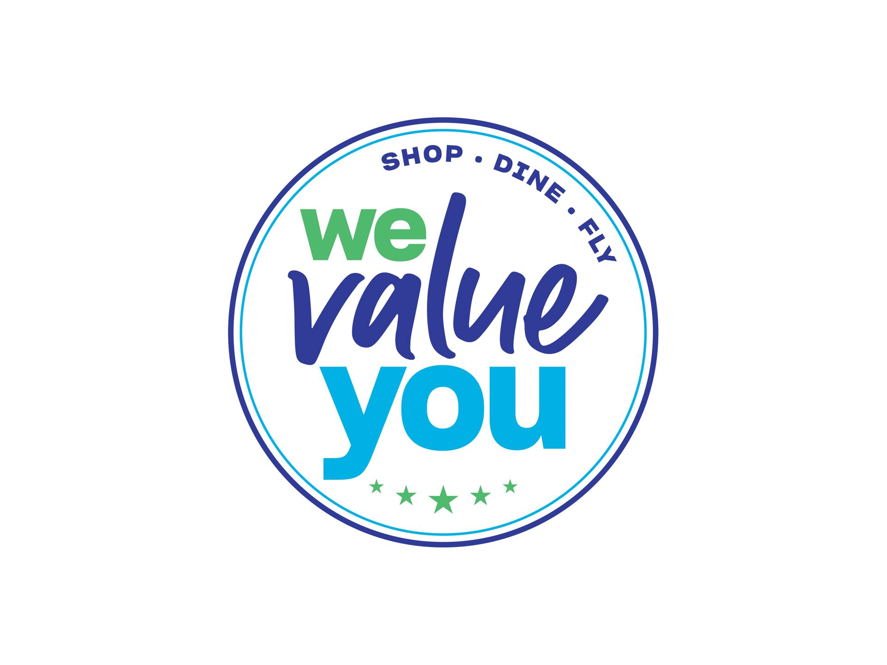
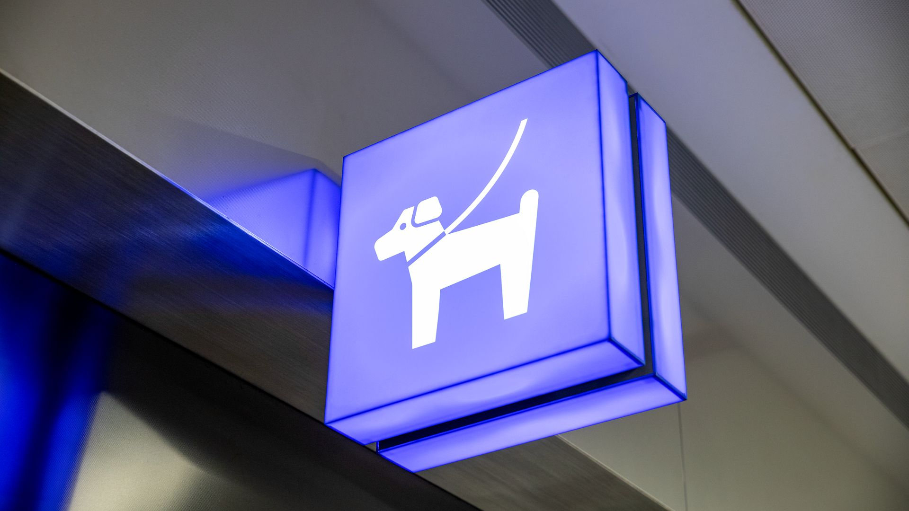

Diane
T5 retail · since 2017
"The 4 a.m. crowd is honest. They want coffee, water, gum, and to be left alone. I respect that."
Read →




JFK runs on people, not machines. Meet a few of them — and find your way around the airport they keep moving.
"I started at T4 in 1998. The terminals changed. The planes got quieter. The welcome didn't."

"The 4 a.m. crowd is honest. They want coffee, water, gum, and to be left alone. I respect that."
Read →
"Yes, you can get a good ramen at JFK. We open at 6. We close at 11. Come back."
Read →
"You learn fast which travelers want quiet and which want a chat. Both are correct answers."
Read →
"The system runs on a 7-minute headway. Most days. Some days it's 8. Either way, you'll get there."
Read →
If you're flying in: the AirTrain to Jamaica beats traffic 9 days out of 10. If you're flying out: the food is better than it used to be, and the lounges are better than you'd expect.
If you're just here picking someone up — we know it's a mess right now. Construction is rerouting pickup zones; here's the current state.